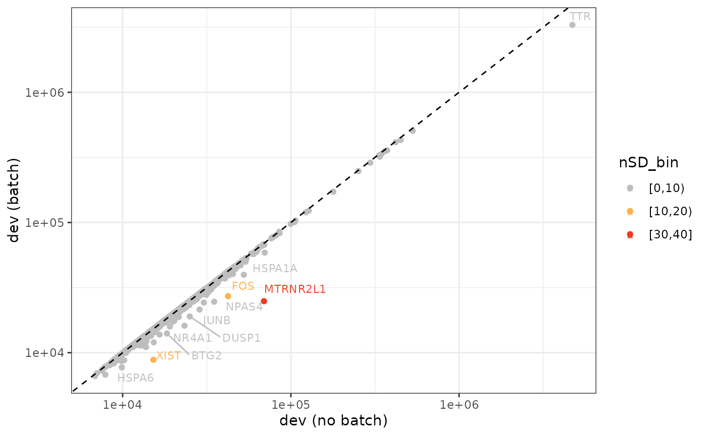
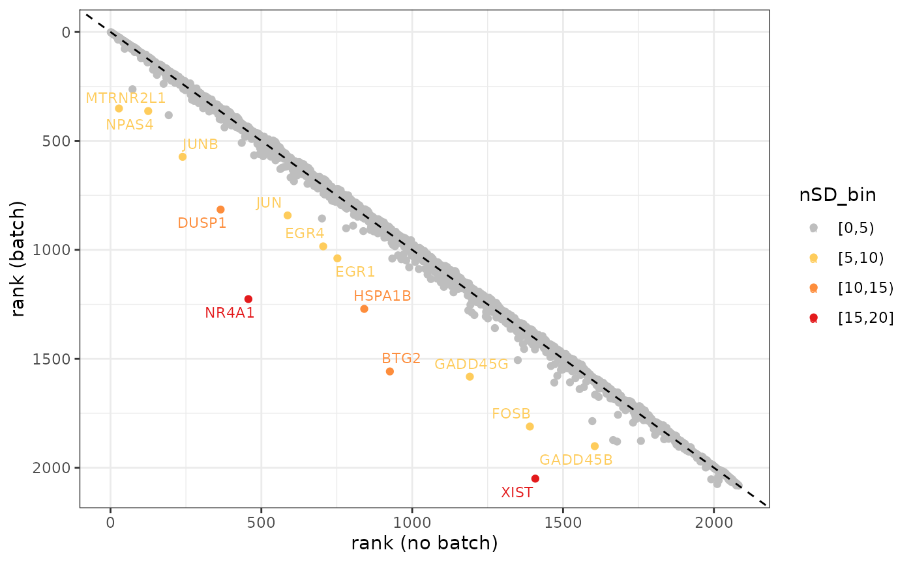

Find Bias Features - Spatial Transcriptomics Data
Christine Hou
Department of Biostatistics, Johns Hopkins Universitychris2018hou@gmail.com
Jacqui Thompson
Department of Biostatistics, Johns Hopkins Universityjthom338@jh.edu
Stephanie Hicks
Department of Biostatistics, Johns Hopkins Universityshicks19@jhu.edu Source:
vignettes/spe.Rmd
spe.RmdIntroduction
BiasDetect package was developed on an unrelated DLPFC
dataset available through the spatialLIBD
package. We first chose binomial deviance model from scry
as the feature selection method that can incorporate a batch variable
into the model. Next, we compared the per-gene ranks and dispersion
values when the model was run with and without a batch effect. Our
data-driven thresholding approach is using the cutoffs based on the
number of standard deviance (nSD) of deviance and rank difference
metrics. Based on self-selected nSD cutoffs, the genes identified as
biased can be filtered out.
The methodology details can be found in Find Bias Feature written by Jacqui Thompson, and the documentation related codes can be found on GitHub.
Installation
BiasDetect is a R package. Install development version
from GitHub.
remotes::install("christinehou11/BiasDetect")Setup
Install BiasDetect
if (!requireNamespace("BiocManager", quietly = TRUE)) {
install.packages("BiocManager")
}
BiocManager::install("BiasDetect")
## Check that you have a valid Bioconductor installation
BiocManager::valid()Load required packages
Data
The spe object used for this tutorial is stored in Dropbox.
The object is also saved in the ExperimentHub package
named humanHippocampus2024, and the development version
from GitHub
is available. The package has not been publicly available, but the data
objects can be accessed via GitHub installation and tutorial is here.
github <- "https://github.com/christinehou11/BiasDetect-analyses/"
subdir <- "raw/refs/heads/main/processed-data/spatialHPC_SRT/"
csv1 <- "spe-hpc_sub4_svgs-only_counts-1.csv"
csv2 <- "spe-hpc_sub4_svgs-only_counts-2.csv"
cdata <- "spe-hpc_sub4_svgs-only_colData.csv"
rdata <- "spe-hpc_sub4_svgs-only_rowData.csv"
url1 <- paste0(github,subdir,csv1, sep = "")
url2 <- paste0(github,subdir,csv2, sep = "")
url3 <- paste0(github,subdir,cdata, sep = "")
url4 <- paste0(github,subdir,rdata, sep = "")
file1 <- read.csv(url(url1), row.names = 1)
file2 <- read.csv(url(url2), row.names = 1)
counts <- rbind(file1, file2)
colnames(counts) = gsub("\\.","-",colnames(counts))
cdata <- read.csv(url(url3), row.names=1)
rdata <- read.csv(url(url4), row.names=1)
spe <- SpatialExperiment(
assay = list("counts"=counts),
colData = cdata, rowData = rdata,
spatialCoordsNames = c("array_row", "array_col"))The dataset in this tutorial section is from spatialHPC. We filtered out 4 samples. We then ran nnSVG to identify spatially-variable genes (SVGs). We filtered to only the top 2000 significant features in the 4 samples we’re using and further filterer to only features that are in the top 2000 of >1 sample. Finally, we obtained 2082 SVGs.
spe
class: SpatialExperiment
dim: 2082 18945
metadata(0):
assays(1): counts
rownames(2082): ENSG00000002330 ENSG00000002586 ... ENSG00000286214
ENSG00000286961
rowData names(6): source type ... gene_name gene_type
colnames(18945): AAACAACGAATAGTTC-1_V11L05-333_B1
AAACAAGTATCTCCCA-1_V11L05-333_B1 ... TTGTTTGTATTACACG-1_V11L05-336_A1
TTGTTTGTGTAAATTC-1_V11L05-336_A1
colData names(10): sample_id slide ... expr_chrM expr_chrM_ratio
reducedDimNames(0):
mainExpName: NULL
altExpNames(0):
spatialCoords names(2) : array_row array_col
imgData names(0):Bias Genes Identification
The data frame created from featureSelect() function
includes nSD_dev and nSD_rank, and we can use
biasDetect() function to identify the bias genes based on
the self-selected nSD integer thresholds for deviance and
rank respectively. The default threshold is 5 for deviance and 5 for
rank.
SVGs <- rowData(spe)$gene_id
batch_df <- featureSelect(spe, batch_effect = "sample_id", VGs = SVGs)
Step 1: Running feature selection without batch...
Step 2: Running feature selection with batch...
Step 3: Calculating deviance and rank difference...
dim(batch_df)
[1] 2082 10
head(batch_df)
gene gene_name dev_default rank_default dev_batch rank_batch
1 ENSG00000002330 BAD 15830.43 1310 15785.12 1289
2 ENSG00000002586 CD99 18837.21 865 18616.10 858
3 ENSG00000004059 ARF5 15033.32 1443 14985.57 1417
4 ENSG00000004660 CAMKK1 14586.54 1506 14479.27 1487
5 ENSG00000004779 NDUFAB1 19859.78 756 19469.72 764
6 ENSG00000005022 SLC25A5 16842.03 1150 16739.61 1131
d_diff nSD_dev r_diff nSD_rank
1 0.002870288 -0.31052071 -21 -0.4914075
2 0.011877487 -0.13869673 -7 -0.1638025
3 0.003186151 -0.30449522 -26 -0.6084093
4 0.007408683 -0.22394495 -19 -0.4446068
5 0.020034113 0.01690146 8 0.1872029
6 0.006118529 -0.24855631 -19 -0.4446068What’s more, biasDetect function allows to return the
biased genes either in data frame format or in plots. The default format
is in data frame.
bias <- biasDetect(batch_df = batch_df, nSD_dev = 10, nSD_rank = 5)
bias
GADD45B DUSP1 EGR1 NR4A1
"ENSG00000099860" "ENSG00000120129" "ENSG00000120738" "ENSG00000123358"
FOSB GADD45G EGR4 BTG2
"ENSG00000125740" "ENSG00000130222" "ENSG00000135625" "ENSG00000159388"
FOS JUNB NPAS4 JUN
"ENSG00000170345" "ENSG00000171223" "ENSG00000174576" "ENSG00000177606"
HSPA1B XIST MTRNR2L1
"ENSG00000204388" "ENSG00000229807" "ENSG00000256618" To see the plots, add visual = TRUE.
bias_fig <- biasDetect(batch_df = batch_df, nSD_dev = 10, nSD_rank = 5, visual = TRUE)Figure a) SVGs with relative change in deviance >= 10 SDs from the mean
bias_fig$deviance
Figure b) SVGs with rank difference >= 5 SDs from the mean
bias_fig$rank
Finally, we can obtain a newer spe_sub4 object without
the biased genes.
Additional information
Please read reference documentation for detailed codes and scripts conducting PRECAST clustering before and after removing the biased gene.
R session information
## Session info
sessionInfo()
#> R version 4.4.2 (2024-10-31)
#> Platform: x86_64-pc-linux-gnu
#> Running under: Ubuntu 24.04.1 LTS
#>
#> Matrix products: default
#> BLAS: /usr/lib/x86_64-linux-gnu/openblas-pthread/libblas.so.3
#> LAPACK: /usr/lib/x86_64-linux-gnu/openblas-pthread/libopenblasp-r0.3.26.so; LAPACK version 3.12.0
#>
#> locale:
#> [1] LC_CTYPE=C.UTF-8 LC_NUMERIC=C LC_TIME=C.UTF-8
#> [4] LC_COLLATE=C.UTF-8 LC_MONETARY=C.UTF-8 LC_MESSAGES=C.UTF-8
#> [7] LC_PAPER=C.UTF-8 LC_NAME=C LC_ADDRESS=C
#> [10] LC_TELEPHONE=C LC_MEASUREMENT=C.UTF-8 LC_IDENTIFICATION=C
#>
#> time zone: UTC
#> tzcode source: system (glibc)
#>
#> attached base packages:
#> [1] stats4 stats graphics grDevices utils datasets methods
#> [8] base
#>
#> other attached packages:
#> [1] httr_1.4.7 SpatialExperiment_1.16.0
#> [3] SingleCellExperiment_1.28.1 SummarizedExperiment_1.36.0
#> [5] Biobase_2.66.0 GenomicRanges_1.58.0
#> [7] GenomeInfoDb_1.42.1 IRanges_2.40.1
#> [9] S4Vectors_0.44.0 BiocGenerics_0.52.0
#> [11] MatrixGenerics_1.18.1 matrixStats_1.5.0
#> [13] BiasDetect_0.99.0 BiocStyle_2.34.0
#>
#> loaded via a namespace (and not attached):
#> [1] gtable_0.3.6 rjson_0.2.23 xfun_0.50
#> [4] bslib_0.8.0 ggplot2_3.5.1 ggrepel_0.9.6
#> [7] lattice_0.22-6 vctrs_0.6.5 tools_4.4.2
#> [10] generics_0.1.3 parallel_4.4.2 tibble_3.2.1
#> [13] pkgconfig_2.0.3 Matrix_1.7-1 RColorBrewer_1.1-3
#> [16] desc_1.4.3 lifecycle_1.0.4 GenomeInfoDbData_1.2.13
#> [19] farver_2.1.2 compiler_4.4.2 textshaping_1.0.0
#> [22] munsell_0.5.1 codetools_0.2-20 htmltools_0.5.8.1
#> [25] sass_0.4.9 yaml_2.3.10 pkgdown_2.1.1
#> [28] pillar_1.10.1 crayon_1.5.3 jquerylib_0.1.4
#> [31] BiocParallel_1.40.0 DelayedArray_0.32.0 cachem_1.1.0
#> [34] magick_2.8.5 abind_1.4-8 rsvd_1.0.5
#> [37] tidyselect_1.2.1 digest_0.6.37 BiocSingular_1.22.0
#> [40] dplyr_1.1.4 bookdown_0.42 labeling_0.4.3
#> [43] fastmap_1.2.0 grid_4.4.2 colorspace_2.1-1
#> [46] cli_3.6.3 SparseArray_1.6.1 magrittr_2.0.3
#> [49] S4Arrays_1.6.0 withr_3.0.2 UCSC.utils_1.2.0
#> [52] scales_1.3.0 rmarkdown_2.29 XVector_0.46.0
#> [55] ragg_1.3.3 beachmat_2.22.0 ScaledMatrix_1.14.0
#> [58] evaluate_1.0.3 knitr_1.49 irlba_2.3.5.1
#> [61] rlang_1.1.5 Rcpp_1.0.14 glue_1.8.0
#> [64] BiocManager_1.30.25 scry_1.18.0 jsonlite_1.8.9
#> [67] R6_2.5.1 systemfonts_1.2.1 fs_1.6.5
#> [70] zlibbioc_1.52.0